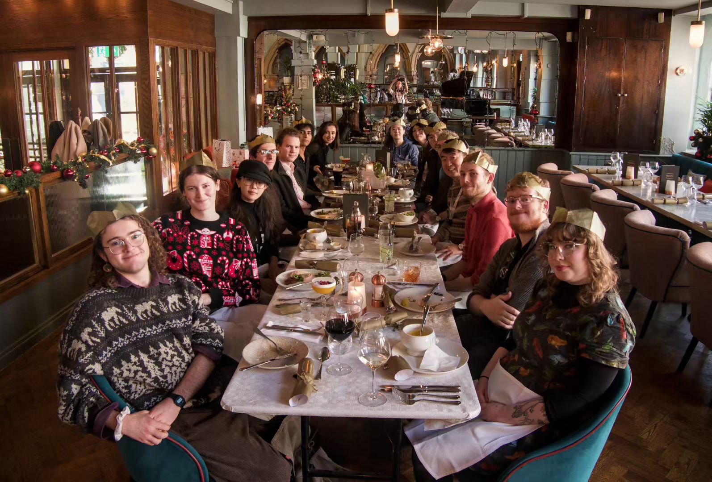

Research Diary
Documenting the insights and scenery along the academic journey.
Anglo-German Summer School at University of Oxford
It is a great honor to attend the Anglo-German Summer School at the University of Oxford. The program is generously funded by the German Academic Scholarship Foundation. Exploring the boundaries of AI and creativity with scholars from diverse backgrounds in such an academic atmosphere is incredibly exciting!
PLISS 2026 Summer School
Attending the 8th PLISS (Programming Language Implementation Summer School) in Bertinoro, Italy. The underlying implementation of programming languages and state space exploration are areas of deep interest to me. Looking forward to learning cutting-edge PL techniques and meeting like-minded researchers.
Finished EPSRC Project RA
Today officially marks the completion of my Research Assistant role in the EPSRC-funded project: Exploring Barriers to AI Doctoral Studies. I have experienced the challenges and charm of interdisciplinary research, honing my skills in processing complex data and unraveling AI ethical barriers.
Visiting Prof. Junjie Chen's Group
It felt incredibly magical that my first visiting exchange as a PhD student was returning to my alma mater, Tianjin University, to visit Prof. Junjie Chen's research group. I even arrived a few hours early that day to study at the Zhengdong Library, a place I frequented during my undergraduate years.
Surprisingly, the new campus has added many new shops and stores—truly proving the joke that "the school always renovates right after you graduate." Besides that, the students in Prof. Chen's group are all very impressive and welcoming. I hope we can have more exchanges in the future!
First Paper Submission to ICML
What a chaotic, high-pressure, and non-stop week! I just submitted my very first paper to ICML. This being the first project of my PhD journey, I have learned an incredible amount. I am deeply grateful to my supervisor Cristina David and my collaborator Arindam Sharma for their invaluable guidance. I feel incredibly lucky to have the opportunity to work with them. I absolutely love this research direction of code generation; I can see its massive potential, and knowing our work is truly meaningful keeps me highly motivated!
Joined PLRG lab

A new beginning! Today I officially joined the PLRG (Programming Languages Research Group) lab family, starting my PhD journey. Transitioning into the deep waters of computer science, I feel excited facing unknown challenges. Keep coding, keep researching!
The picture is from our group's Christmas party—my very first official Christmas party in the UK, and it was a lot of fun. I can truly feel how wonderful and friendly everyone in our group is, especially my two supervisors. There are even two (perhaps more) members currently learning Chinese, which is quite cute. Worth mentioning is a big thanks to our well-funded lab for treating me to such a great meal! I was a bit too shy to take photos of the food that day, but it was absolutely delicious!!!
I love doing a PhD. I am absolutely certain of this right now. I love doing a PhD. I am absolutely certain of this right now.
Graduated from Tianjin University & University of Bristol

Participating in the 3+1 AMD Programmes made 2025 a chaotic yet extraordinarily fulfilling year. Thanks to this program, I completed all my undergraduate credits within the first three years, and successfully managed my master's studies alongside writing both my bachelor's and master's dissertations in the fourth year. It was a period of immense academic pressure, but the relentless learning pushed me to my limits and enriched me deeply.
While this year seemed perfect on the surface, it was actually intertwined with confusion, doubts, and anxieties. Nevertheless, amidst the heavy workload, I managed to step out and explore a much bigger world: sitting by a lake near a wooden cabin in Finland, swimming in the jelly-like crystal waters of Hurghada, standing atop snowy mountains in Norway, and walking in the drizzle of Grindelwald, Switzerland... In these breathtaking places, I felt like I was living in a beautiful dream.
I am deeply grateful for my parents' continuous support. Now that everything is steadily falling into place, my heart is full of gratitude. My only regret this year is missing both my undergraduate and master's graduation ceremonies. Here is to making a wish: I hope to successfully earn my PhD and finally attend the graduation ceremony I've been longing for! I still remember during my PhD interview, someone had written on the blackboard by the door: "Don't do AI! It'S, BAD!!! You will regret I". I wonder how I will answer this statement four years from now.